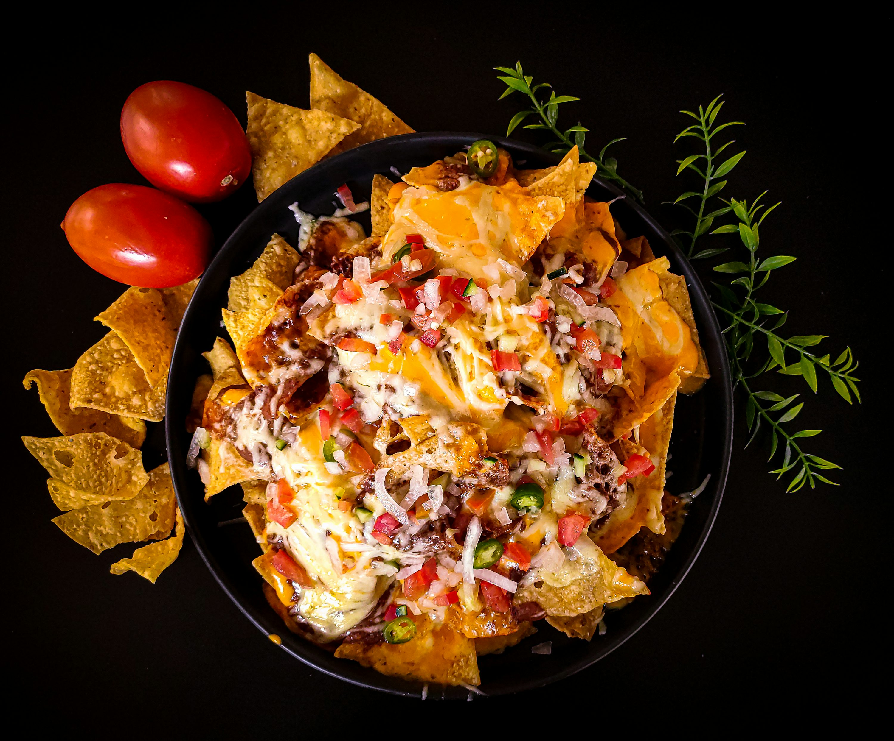

Resep Masakan Meksiko

Taco
Bahan
- 300 gram daging sapi cincang
- 1/2 bawang bombay, cincang halus
- 2 siung bawang putih, cincang
- 1 sdm minyak goreng
- 1 sdm bubuk cabai (opsional, sesuai selera)
- 1/2 sdt jintan bubuk (jika ada)
- Kulit taco/Tortilla
- Selada, iris tipis
- Tomat, potong dadu
- Keju parut (cheddar atau mozzarella)
- Saus salsa (bisa beli atau buat sendiri)
Alat
- Wajan
- Spatula atau sendok kayu
- Talenan
- Pisau tajam
- Mangkuk saji
- Kompor
- Piring saji
Cara Membuat:
- Panaskan minyak dalam wajan di atas kompor.
- Tumis bawang bombay dan bawang putih hingga harum.
- Masukkan daging sapi cincang, masak hingga berubah warna.
- Tambahkan bubuk cabai, jintan, garam, dan merica. Aduk rata dan masak hingga daging matang dan airnya menyusut.
- Panaskan kulit taco di atas teflon atau oven selama beberapa menit agar lebih renyah dan hangat.
- Ambil kulit taco, isi dengan daging sapi tumis.
- Tambahkan selada, tomat, keju parut, dan pelengkap lainnya sesuai selera.
- Sajikan segera selagi hangat. Bisa ditambahkan perasan jeruk nipis untuk cita rasa segar.

Burrito
Bahan
- 300 gram daging sapi cincang
- 1/2 bawang bombay, cincang halus
- 2 siung bawang putih, cincang
- 1 sdm minyak goreng
- 1 sdm bubuk cabai (opsional)
- 1/2 sdt jintan bubuk
- Garam dan merica secukupnya
- 1 cangkir nasi putih matang
- 1/2 cangkir jagung manis
- 1/2 cangkir kacang merah (kalengan atau rebus sendiri)
- 1/2 sdt paprika bubuk atau cabai bubuk
- Tortilla besar (burrito wrap)
- Selada, iris tipis
- Tomat, potong dadu
- Keju parut
- Saus salsa atau saus tomat pedas
- Alpukat atau guacamole (opsional)
Alat
- Wajan
- Spatula atau sendok kayu
- Talenan
- Pisau tajam
- Mangkuk saji
- Kompor
- sendok
- Piring saji
Cara Membuat:
- Panaskan minyak di wajan, tumis bawang bombay dan bawang putih hingga harum.
- Tambahkan daging sapi cincang, masak hingga berubah warna.
- Tambahkan bubuk cabai, jintan, garam, dan merica. Aduk rata dan masak hingga matang dan tidak berair.
- Campur nasi matang dengan jagung, kacang merah, paprika bubuk, dan sedikit garam. Aduk rata.
- Hangatkan tortilla di wajan tanpa minyak selama beberapa detik agar lentur dan mudah dilipat.
- Di atas tortilla, tata nasi Meksiko, daging tumis, selada, tomat, keju, dan pelengkap lainnya sesuai selera.
- Lipat bagian bawah tortilla ke atas, lalu gulung dari satu sisi sambil menekan isian agar padat.
- Burrito siap disajikan. Bisa langsung dimakan atau dipanggang sebentar agar permukaannya renyah.

Enchilada
Bahan
- 300 gram daging sapi cincang
- 1/2 bawang bombay, cincang halus
- 2 siung bawang putih, cincang
- 1 sdm minyak goreng
- Garam dan merica secukupnya
- 1 sdt jintan bubuk (opsional)
- 1/2 sdt bubuk cabai atau paprika bubuk
- 2 sdm minyak goreng
- 2 sdm tepung terigu
- 2 sdm bubuk cabai (atau paprika bubuk jika tidak suka pedas)
- 2 cangkir kaldu ayam atau sapi
- 1 sdm saus tomat atau pasta tomat
- 1/2 sdt oregano kering
- 6 lembar tortilla (ukuran sedang)
- 1 cangkir keju parut (cheddar atau mozzarella)
- Daun ketumbar cincang (opsional)
Alat
- Wajan
- Talenan dan pisau
- Mangkuk saji
- Loyang tahan oven (ukuran sedang)
- Oven
- Sendok atau sendok sayur
Cara Membuat:
- Panaskan minyak di wajan.
- Tumis bawang bombay dan bawang putih hingga harum.
- Masukkan daging cincang, masak hingga matang dan kering.
- Bumbui dengan jintan, bubuk cabai, garam, dan merica. Sisihkan.
- Dalam panci kecil, panaskan minyak.
- Tambahkan tepung, aduk terus hingga berubah warna (seperti membuat roux).
- Tambahkan bubuk cabai/paprika dan aduk rata.
- Tuangkan kaldu sedikit demi sedikit sambil diaduk agar tidak menggumpal.
- Masukkan saus tomat dan oregano, aduk rata.
- Masak hingga mengental, koreksi rasa.
- Panaskan oven ke 180°C (350°F).
- Oles sedikit saus di dasar loyang.
- Ambil tortilla, isi dengan daging cincang dan sedikit keju, lalu gulung.
- Susun gulungan tortilla di loyang dengan bagian lipatan di bawah.
- Siram semua enchilada dengan saus hingga rata.
- Taburi sisa keju di atasnya.
- Panggang selama 15 sampai 20 menit atau sampai keju meleleh dan permukaan agak kecoklatan.
- Angkat, taburi daun ketumbar dan sajikan dengan krim asam jika suka.

Quesadilla
Bahan
- 200 gram daging sapi cincang
- 1/2 bawang bombay, cincang halus
- 1 siung bawang putih, cincang
- 1 sdm minyak goreng
- 1/2 sdt jintan bubuk (opsional)
- 1/2 sdt bubuk cabai/paprika bubuk
- Garam dan merica secukupnya
- 4 lembar tortilla ukuran sedang
- 1,5 cangkir keju parut (cheddar, mozzarella, atau campuran)
- Tomat, iris tipis (opsional)
- Daun ketumbar atau daun bawang (opsional)
- Mentega atau margarin (untuk memanggang)
Alat
- Wajan
- Spatula
- Talenan & pisau
- Sendok
- Wajan datar atau teflon lebar (untuk memanggang)
- Piring saji
Cara Membuat:
- Panaskan minyak di wajan.
- Tumis bawang bombay dan bawang putih hingga harum.
- Tambahkan daging sapi cincang, aduk hingga matang dan kering.
- Bumbui dengan jintan, bubuk cabai/paprika, garam, dan merica. Sisihkan.
- Panaskan wajan datar atau teflon lebar di atas api sedang.
- Letakkan 1 lembar tortilla di wajan, taburi separuh permukaannya dengan keju parut.
- Tambahkan isian daging, tomat, dan daun ketumbar jika pakai.
- Tambahkan sedikit keju lagi di atas isian agar merekat saat dilipat.
- Lipat tortilla menjadi setengah lingkaran, tekan sedikit agar menempel.
- Masak hingga bagian bawah kecoklatan dan keju meleleh (sekitar 2–3 menit), lalu balik dan panggang sisi lainnya.
- Ulangi untuk tortilla lainnya.
- Angkat, potong-potong menjadi segitiga.
- Sajikan hangat dengan saus salsa, guacamole, atau krim asam.

Tamales
Bahan
- 2 cangkir tepung jagung khusus tamales (masa harina)
- 1/2 cangkir mentega putih atau margarin (bisa juga shortening)
- 1/2 sdt baking powder
- 1/2 sdt garam
- ±1,5 cangkir kaldu ayam atau sapi hangat (sesuaikan agar adonan lembut dan mudah dioles)
- 300 gram daging sapi rebus, suwir halus
- 2 siung bawang putih, cincang
- 1/2 bawang bombay, cincang
- 2 buah cabai kering (rendam dan haluskan) atau 1 sdm bubuk cabai
- 1 sdm pasta tomat
- Garam dan merica secukupnya
- Sedikit minyak untuk menumis
- ±20 lembar daun jagung kering (corn husks), rendam air panas hingga lentur dan tiriskan
Alat
- Mangkuk besar
- Mixer tangan (jika ada)
- Wajan
- Kukusan besar
- Sendok
- Talenan dan pisau
- Mangkuk air (untuk merendam daun)
Cara Membuat:
- Tumis bawang putih dan bawang bombay hingga harum.
- Masukkan daging suwir, pasta tomat, cabai halus/bubuk, garam, dan merica.
- Masak hingga bumbu meresap dan sedikit kering. Sisihkan.
- Kocok mentega putih hingga lembut dan mengembang (gunakan mixer atau whisk).
- Campurkan masa harina, baking powder, dan garam dalam mangkuk.
- Tuang kaldu sedikit demi sedikit sambil diaduk.
- Tambahkan mentega yang sudah dikocok, aduk rata hingga adonan lembut dan mudah dioles (tidak terlalu cair atau kering).
- Ambil selembar daun jagung yang sudah lentur.
- Oleskan ±2 sdm adonan masa di tengah daun (sepanjang kira-kira 10 cm).
- Tambahkan 1 sdm isian daging di tengah adonan.
- Lipat sisi kanan dan kiri daun ke tengah, lalu lipat bagian bawah ke atas (atas biarkan terbuka atau bisa ditutup juga).
- Ulangi hingga adonan habis.
- Panaskan kukusan.
- Susun tamales berdiri (bagian terbuka di atas) dalam kukusan.
- Kukus selama ±1–1,5 jam, hingga adonan mengeras dan tidak lengket di daun.
- Tamales siap disajikan hangat. Bisa disantap langsung atau dengan saus salsa, krim asam, atau saus pedas.

Chiles en Nogada
- Cabe poblano, saus walnut, daging, buah
Cara Membuat:
- Isi cabe dan siram dengan saus walnut.

7. Pozole
- Hominy, daging babi, cabai kering
Cara Membuat:
- Rebus semua bahan hingga empuk dan bumbu meresap.

8. Mole (Saus Cokelat)
- Cokelat hitam, cabai, rempah-rempah
Cara Membuat:
- Blender semua bahan, lalu masak hingga kental.

9. Fajitas
- Daging sapi, paprika, bawang
Cara Membuat:
- Tumis semua bahan hingga karamelisasi.

10. Tostada
- Tortilla goreng, kacang hitam, selada
Cara Membuat:
- Goreng tortilla dan beri topping.

11. Elote
- Jagung bakar, mayones, keju cotija, cabai bubuk
Cara Membuat:
- Bakar jagung, olesi dengan mayo dan taburi topping.

12. Guacamole
- Alpukat, bawang, jeruk nipis, tomat
Cara Membuat:
- Hancurkan alpukat, tambahkan semua bahan dan aduk rata.

13. Nacho
- Keripik tortilla, keju leleh, daging cincang, salsa
Cara Membuat:
- Tata keripik, beri topping, panggang 10 menit.